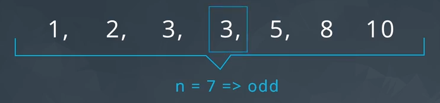

Descriptive Statistics
Definitions
Descriptive statistics
Descriptive statistics is about describing our collected data.
Types of measures
When analyzing both discrete and continuous quantitative data, we generally discuss four main aspects:
- The center
- The spread
- The shape
- and outliers
Measure of center
There are three widely accepted measures of center:
- The mean, calculated as the sum of all of the values in our data set divided by how many data points we have:
-
The median, is a value that divides our data set such that 50% of the values are larger while the remaining 50% are smaller.
Odd data count Even data count  - And the mode, the most common value in the data set.
Measure of spread
Measures of Spread are used to provide us an idea of how spread out our data are from one another. Common measures of spread include:
- Range
- Interquartile Range (IQR)
- Standard Deviation
- Variance
The 5 numbers summary
The five number summary consist of 5 values:
- Minimum: The smallest number in the dataset.
- Q1: The value such that 25% of the data fall below.
- Q2: The value such that 50% of the data fall below.
- Q3: The value such that 75% of the data fall below.
- Maximum: The largest value in the dataset.
| Odd data count | Even data count |
|---|---|
The range
The range is then calculated as the difference between the maximum and the minimum.
IQR - Interquartile Range
The interquartile range is calculated as the difference between Q3 and Q1.
Standard Deviation and Variance
The standard deviation is one of the most common measures of the spread of data. It is defined as the average distance of each observation from the mean.
The variance is used to compare the spread of two different groups. A set of data with higher variance is more spread out than a dataset with lower variance. Be careful, there might be outliers that are increasing the variance, when most of the data are actually very close.
When data are related to money or the economy, higher variance (or standard deviation) is associated with higher risk.
When comparing the spread between two datasets, the units of each must be the same: The standard deviation is used more often, in practice than the variance, because it shares the units of the original dataset.
Shapes
From a histogram we can quickly identify the shape of our data. The distribution of our data is frequently associated with one of the three shapes:
- Right-skewed
- Left-skewed
- Symmetric (frequently normally distributed)
The mode of a distribution is essentially the tallest bar in a histogram. There may be multiple modes depending on the number of peaks in our histogram.
| Shape | Mean vs. Median | Real World Applications |
|---|---|---|
| Symmetric (Normal) | Mean equals Median | Height, Weight, Errors, Precipitation |
| Right-skewed | Mean greater than Median | Amount of drug remaining in a blood stream, Time between phone calls at a call center, Time until light bulb dies |
| Left-skewed | Mean less than Median | Grades as a percentage in many universities, Age of death, Asset price changes |
Outliers
Outliers are points that fall very far from the rest of our data points. This influences measures like the mean and standard deviation much more than measures associated with the five number summary.
Working with outliers
When outliers are present we should consider the following points:
- Noting they exist and they impact on summary statistics.
- If typo - remove or fix
- Understanding why they exist, and the impact on questions we are trying to answer about our data.
- Reporting the 5 number summary values is often a better indication than measures like the mean and standard deviation when we have outliers.
- Be careful in reporting. Know how to ask the right questions.
Calculate outliers - Tukey's method
Tukey’s rule says that the outliers are values more than 1.5 times the interquartile range from the quartiles — either below Q1 − 1.5IQR, or above Q3 + 1.5IQR.